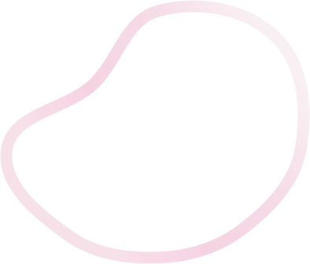
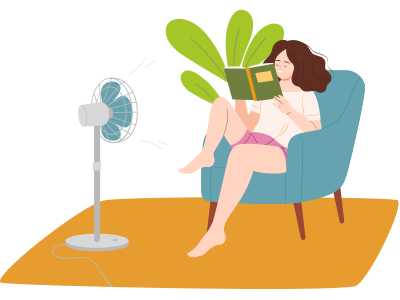
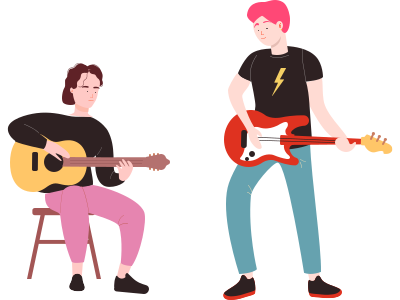
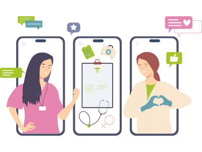

相關文章

2025.01.03
什麼是藝術治療？
藝術治療（Art Therapy）是一種結合藝術創作與心理治療的專業療法，能幫助個體表達内心情感、處理心理困擾、以及促進心理健康和自我成長。

2024.12.09
不同中尋求相同頻率
在包容團體中獲得支持，可提升自信、促進社交適應；透過同儕理解與接納，減少孤立，建立互助關係並發揮個體獨特潛能。

2024.11.23
打造全方位醫療物聯網
醫療體制串聯能有效整合診療服務，提供專業支持之餘也能提升診斷與治療效率，從而改善治療結果與患者福祉。